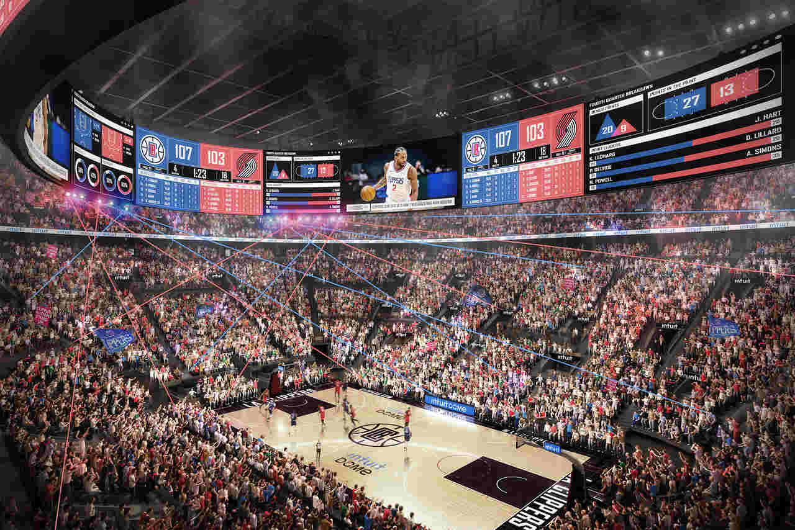

Los Angeles Clippers - Fundado em 1970, o Los Angeles Clippers é uma equipe que, ao longo de sua história, teve dificuldades para alcançar o sucesso, mas se tornou uma das franquias mais competitivas na última década. Com a chegada de estrelas como Chris Paul, Blake Griffin, e mais recentemente Kawhi Leonard e Paul George, os Clippers estão em busca de seu primeiro título da NBA.
Elenco - Kawhi Leonard (#2), Paul George (#13), Ivica Zubac (#40), Norman Powell (#24), Terance Mann (#14), Marcus Morris Sr. (#8), Bones Hyland (#11), Kobe Brown (#0), Amir Coffey (#7), Nicolas Batum (#33).
Títulos NBA - Nenhum
Títulos Conferência - Nenhum
Estádio - Crypto.com Arena (19.068)
